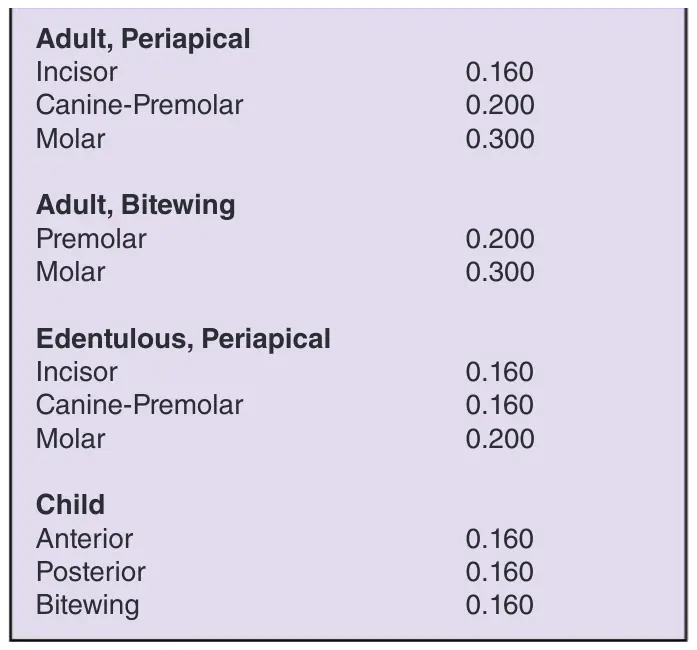
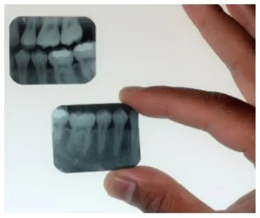

نسخه استخراجشده؛ ترجمه یا تأیید علمی انجام نشده است. وضعیت: captured
نخست هدف کل برنامهی تضمین کیفیت: «یک برنامهی تضمین کیفیت در رادیولوژی مجموعهای از روشهاست که برای اطمینان از عملکرد بهینه و پایدار هر جزء زنجیرهی تصویربرداری طراحی شدهاند.» و نتیجهاش دوگانه است: «وقتی همهی اجزا درست کار کنند، نتیجه رادیوگرافیهای پیوسته باکیفیت و دوز پرتویی کاهشیافته برای بیماران و کارکنان مطب است.»

و یک الزام سازمانی: «برای مدیریت مؤثر برنامه، مطب باید یک فرد را شناسایی کند که مسئولیت اصلی اجرای برنامه و هماهنگی اقدام اصلاحی را بپذیرد.» و خبر خوب: «بیشتر روشهای تضمین کیفیت بهسرعت انجام میشوند و میتوانند تأثیر معناداری بر کیفیت رادیوگرافیک داشته باشند.»
تعریفش: «یک ابزار ساده و مؤثر برای کاهش شمار رادیوگرافیهای معیوب، نگه داشتن یک دفتر تکرار برای ثبت خطاهایی است که نیازمند گرفتن دوبارهی رادیوگرافیاند.»
و سه چیزی که باید ثبت شوند: «دفتر باید اپراتور، تجهیزات خاص بهکاررفته، و توصیف یا نشانهای از ماهیت خطایی که نیاز به اصلاح داشت را شناسایی کند.»
و چرا این سه؟ «این فرایند بهسرعت منبع مشکلات تکرارشونده را آشکار میکند و حل زودهنگام را تسهیل میکند.»
و یک الزام گزارشنویسی: «خطاهایی که بر کیفیت تشخیصی یا تفسیر اثر میگذارند باید در گزارش رادیولوژی گنجانده شوند.»
و بازبینی هفتگی: «سابقهی تکرار باید هفتگی بازبینی شود تا هر مشکل تکرارشونده شناسایی گردد — برای مثال با اپراتورهای خاص، پروجکشنهای رادیوگرافیک خاص، گیرندههای معیوب، و شرایط پردازش فیلم.» و کاربردش: «این اطلاعات میتواند برای آغاز اقدامات اصلاحی، از جمله آموزش کارکنان، به کار رود.»
و دو هدف کلی این مجموعهروشها: «(۱) کمینه کردن خطاهای تکنیک رادیوگرافیک، شامل وضعیتدهی بیمار و تنظیمات پرتوگیری، و (۲) شناسایی خطاهای سیستماتیک مرتبط با نقص تجهیزات.»
الزامش: «مطب باید تنظیمات پرتوگیری برای هر دستگاه را تدوین کند. برای رادیوگرافی داخلدهانی، تنظیمات جداگانه باید برای هر ترکیب منبع-گیرندهی بهکاررفته تعیین شود. و تنظیمات جداگانه باید برای بیماران بزرگسال و کودک تعیین گردد.»
و کجا نصب شود؟ «ترجیحاً مجاور پنل کنترل دستگاه که این پارامترها آنجا انتخاب میشوند.»
و چه چیزهایی باید روی نمودار باشند؟ «نمودار باید منبع پرتو ایکس و گیرندهی بهکاررفته را مشخص کند و کیلوولتاژ پیک (kVp)، میلیآمپر (mA)، و زمانهای پرتوگیری مناسب برای هر ناحیهی حفرهی دهان را نشان دهد.»
و چرا این کار مهم است؟ «این نمودارها کمک میکنند اطمینان یابیم که همهی اپراتورها از همان دامنهی بهینهی عوامل پرتوگیری استفاده میکنند.»
و بازبینی ماهانه: «هر ماه، این نمودار باید بازرسی شود تا تأیید گردد اطلاعات خوانا و دقیق است.»
و یک نمونهی نمودار چه ساختاری دارد؟ اطلاعات شناسایی دستگاه و گیرنده (مثلاً منبع، فاصلهی منبع-جسم ۳۰ سانتیمتر، هولدر سنسور، کولیماسیون مستطیلی)، تنظیمات ثابت (kVp ۶۶، mA ۸)، و سپس زمان پرتوگیری برای هر پروجکشن در چهار گروه: پریاپیکال بزرگسال، بایتوینگ بزرگسال، پریاپیکال بیدندان، و کودک.
و یک الگوی مهم در آن نمونه: زمانها از قدامی به خلفی افزایش مییابند (انسیزور ۰٫۱۶۰ ثانیه، کانین-پرمولر ۰٫۲۰۰، مولر ۰٫۳۰۰)؛ بیدندان کمتر از دنداندار است؛ و کودک کمترین و یکنواخت است. و یک قاعدهی مهم: «زمانهای بهینهی پرتوگیری باید در هر مطب بهصورت تجربی تعیین شوند، چون با تنظیمات دستگاه، فاصلهی منبع تا پوست، و عوامل دیگر تغییر میکنند.»
و اکنون تعریف طلایی: «زمان بهینهی پرتوگیری، کمترین زمان پرتوگیری است که اطلاعات تشخیصی لازم را فراهم میکند.»

و کِی باید دوباره تعیین شود؟ «تنظیمات بهینه باید هر بار که هر جزء سامانهی تصویربرداری عوض شود دوباره تعیین گردند — برای مثال یک منبع پرتو ایکس تازه، تغییر از فیلم به دیجیتال، و استفاده از برند متفاوت گیرندهی دیجیتال.»
روال کار: «برای تعیین عوامل بهینه، تصاویر جسم آزمون با چند تنظیم پرتوگیری ساخته میشوند. برای رادیوگرافی داخلدهانی، انرژی پرتو ۶۰ تا ۷۰ کیلوولت به کار میرود. بالاترین تنظیم mA موجود انتخاب میشود و چند پرتوگیری با زمانهای متفاوت انجام میگیرد.» سپس پارامترها «بهصورت دیداری روی تصاویر حاصل بررسی میشوند».
| پارامتر | چگونه سنجیده میشود |
|---|---|
| تفکیک فضایی | با یک گِیج جفتخط؛ بر حسب جفتخط بر میلیمتر |
| تفکیک کنتراست | با بررسی دایرههای رادیولوسنت ساختهشده از چاهکهایی با عمق یا پهنای متفاوت درون یک بلوک پلکسیگلاس |
| دامنهی دینامیک | با یک گوهی پلهای سربی که دامنهای از رادیودنسیتهها را نشان میدهد |
و افزون بر این سه، یکنواختی تصویر هم بررسی میشود.
و فانتوم DDQA — فانتوم تضمین کیفیت دیجیتال دندانی — «ارزیابی تفکیک فضایی، دامنهی دینامیک، و تفکیک کنتراست را روی یک تصویر واحد فراهم میکند». و ویژگی طراحیاش: «فانتوم طراحی شده تا فاصلههای منبع-جسم و منبع-گیرندهی بالینی مربوط را فراهم کند.»
و استاندارد مرجعش: «استاندارد ملی آمریکا / انجمن دندانپزشکی آمریکا شمارهی ۱۰۹۴ راهنمایی برای تعیین عوامل بهینهی پرتوگیری در رادیوگرافی داخلدهانی فراهم میکند.»
و دو مفهوم که با هم دو گام پیاپی میسازند:
| روش | سطح مرجع تشخیصی | دوز دستیافتنی |
|---|---|---|
| رادیوگرافی داخلدهانی | ۱٫۶ میلیگری | ۱٫۲ میلیگری |
| رادیوگرافی پانورامیک | ۱۰۰ میلیگری بر سانتیمتر مربع | ۷۶ میلیگری بر سانتیمتر مربع |
| رادیوگرافی سفالومتریک | ۰٫۱۴ میلیگری | ۰٫۰۹ میلیگری |
و یک خلأ که باید بدانی: «گزارش شمارهی ۱۷۲ شورای ملی حفاظت و اندازهگیریهای پرتویی سطوح مرجع تشخیصی و دوزهای دستیافتنی را برای داخلدهانی، پانورامیک و سفالومتریک توصیه میکند. DRL و AD برای CBCT هنوز تدوین نشدهاند.»
و توجه کن که واحد پانورامیک متفاوت است: میلیگری بر سانتیمتر مربع — یعنی حاصلضرب دوز در سطح، چون در پانورامیک پرتو باریکی روی یک قوس حرکت میکند و بیان دوز نقطهای معنا ندارد.